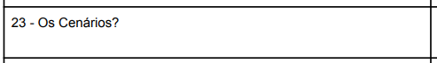
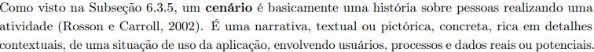
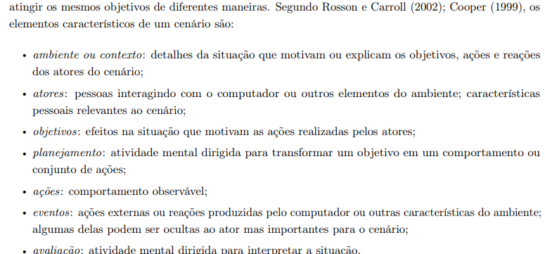
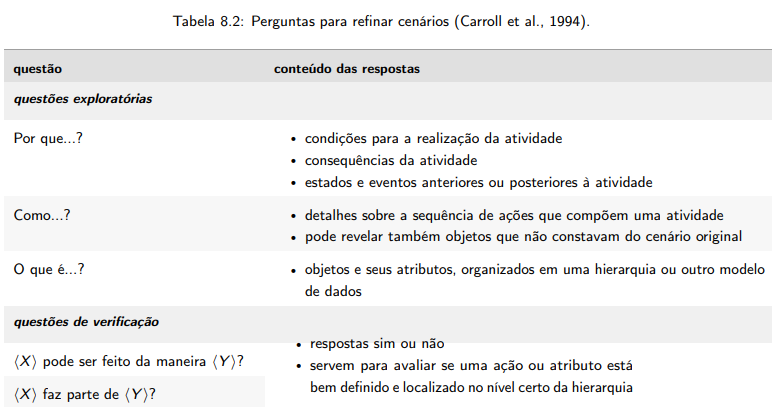
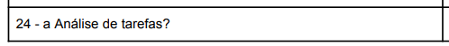
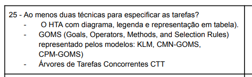
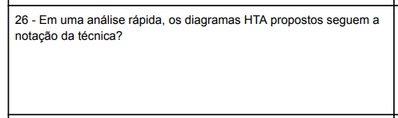
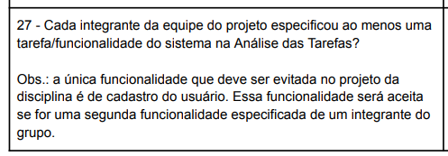
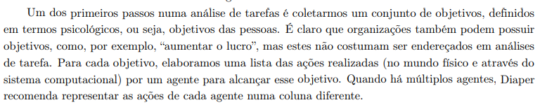

Planejamento verificacao
Introdução
Esse planejamento organiza uma verificação somativa sobre a etapa 2 do projeto do grupo 8 - Central Expresso, seguindo o que foi descrito no livro Interação Humano-Computador e Experiência do Usuário (1) em relação à avaliação de projetos.
Objetivo
O objetivo dessa verificação é a realização de uma análise sobre o que o grupo a ser analisado fez, para garantir que erros sejam levantados e que possam ser futuramente corrigidos.
Metodologia
A metodologia é a de inspeção por percurso cognitivo(2). Essa metodologia de avaliação tem como principal objetivo verificar a facilidade que se tem com o aprendizado naquele sistema. O sistema em questão seria a documentação disponibilizada pelo github pages pelo grupo 8 - Central Expresso.
O percurso cognitivo consiste nos 4 passos seguintes: - Preparação - Coleta de dados - Interpretação dos dados - Relato dos resultados
Sendo assim, definiremos a seguir os participantes dessa verificação, os objetos a serem verificados, e os checklists contendo uma lista de perguntas a serem respondidas pelo revisor da lista, contendo fonte, e imagem de onde foi retirado do livro aquela informação.
Segue abaixo na tabela 1 representando um exemplo de checklist a ser seguido:
| Item | Descrição | Avaliação | Descrição do problema | Sugestão de Ação Corretiva | Observações |
|---|---|---|---|---|---|
| 1 | Perfil do Usuário | não conforme | Ausência de informações no Perfil do Usuário | Inserir as informações relacionadas a x, y e z | Pode ser necessário realizar coletas adicionais de dados |
Tabela 1: Exemplo de estrutura para checklist de verificação.
Fonte: Bruna Lima, 2024
Participantes
O avaliador responsável por desenvolver a lista de verificação da etapa 2 para o grupo 8 será a Mariana Letícia, e os revisores serão Daniela Alarcão e Genilson Silva.
Cronograma
O cronograma de realização das verificações foi estabelecido logo abaixo na tabela 2:
| Data | Descrição | Responsável |
|---|---|---|
| 12/06/2024 | Realizar verificação do Pefil do Usuário | Daniela Alarcão e Genilson Silva |
| 12/06/2024 | Realizar verificação das Personas | Daniela Alarcão e Genilson Silva |
| 12/06/2024 | Realizar verificação dos Cenários | Daniela Alarcão e Genilson Silva |
| 12/06/2024 | Realizar verificação da Análise de tarefas | Daniela Alarcão e Genilson Silva |
Tabela 2: Cronograma de verificação dos artefatos.
Fonte: Mariana Letícia, 2024
Checklists
Os checklists tiveram como basepara essa verificação seguirão o seguinte padrão (3):
Checklist 1: Perfil do Usuário
-
Item 1: descrição aqui
- Fonte:
- Imagem:
-
Item 2: descrição aqui
- Fonte:
- Imagem:
Checklist 2: Personas
-
Item 1: descrição aqui
- Fonte:
- Imagem:
-
Item 2: descrição aqui
- Fonte:
- Imagem:
Checklist 3: Cenários
-
Item 1: O cenário está presente no documento, segundo é evidente na Figura X?(4)
- Fonte: disponível no canal do telegram da disciplina - IHC Turma 1 (1/2024) - Prof. André (6)
- Imagem:

Figura X: Imagem do documento (6) perguntando sobre a existência dos cenários
-
Item 2: O cenário consiste em uma narrativa real ou pitoresca, com vários detalhes e contexto em formalizado, segundo é evidente na Figura X?(4)
- Fonte: Barbosa, Simone D. J. et al. Interação Humano-Computador e Experiência do Usuário. Autopublicação, 2021, p. 172
- Imagem:

Figura X: Imagem do livro citado acima descrevendo como deve ser um cenário
-
Item 3: O cenário contém esses seguintes elementos: ambiente ou contexto; atores; objetivos; planejamento; ações; eventos; e avaliação, segundo Rosson e Carroll (2002) e Cooper (1999) (4) e a Figura X a seguir:
- Fonte: Barbosa, Simone D. J. et al. Interação Humano-Computador e Experiência do Usuário. Autopublicação, 2021, p. 172
- Imagem:

Figura X: Imagem do livro citado acima descrevendo como deve ser um cenário
-
Item 4: Os cenários respondem, segundo a figura X seguir, as perguntas: Por que? Como? O que é? (5)
- Fonte: Barbosa, Simone D. J. et al. Interação Humano-Computador e Experiência do Usuário. Autopublicação, 2021, p. 174
- Imagem:

Figura X: imagem com texto descrevendo quais perguntas o cenário deve responder
Checklist 4: Análise de tarefas
-
Item 1: A análise de tarefas está presente no documento?
- Fonte: disponível no canal do telegram da disciplina - IHC Turma 1 (1/2024) - Prof. André (6).
- Imagem:

Figura X: Pergunta sobre a existência do documento no projeto
-
Item 2: Há no mínimo duas técnicas para especificar as tarefas? Por exemplo: HTA, GOMS ou CTT.
- Fonte: disponível no canal do telegram da disciplina - IHC Turma 1 (1/2024) - Prof. André (6).
- Imagem:

Figura X: exigência da análise de tarefas ser feita com mais de uma técnica.
-
Item 3: Os diagramas HTA propostos seguem a notação da técnica?
- Fonte: disponível no canal do telegram da disciplina - IHC Turma 1 (1/2024) - Prof. André (6).
- Imagem:

Figura X: Pergunta sobre a existência de notação técnica
-
Item 4: Cada integrante do grupo analisou pelo menos uma funcionalidade?
- Fonte: disponível no canal do telegram da disciplina - IHC Turma 1 (1/2024) - Prof. André (6)
- Imagem:

Figura X: Exigência de uma tarefa analisada por integrante
-
Item 5: A análise de tarefas possui um conjunto de objetivos que correspondem ao objetivo das pessoas que utilizarão aquele sistema, além de uma lista de ações correspondentes ao objetivos?
- Fonte: Barbosa, Simone D. J. et al. Interação Humano-Computador e Experiência do Usuário. Autopublicação, 2021, p. 178. (7)
- Imagem:

Figura X: Evidência da necessidade de objetivos e listas para a análise de tarefas
Biografia
- Barbosa, E. F., & Souza, S. R. S. (2017). Inspeção de Software. Instituto de Ciências Matemáticas e de Computação — ICMC/USP. Disponivel em: https://edisciplinas.usp.br/pluginfile.php/5306452/mod_resource/content/0/Aula02-Inspecao.pdf
- Serrano, M., & Serrano, M. (2017). Requisitos – Aula 23. Disponivel em: https://aprender3.unb.br/pluginfile.php/2843809/mod_resource/content/2/Requisitos%20-%20Aula%20023.pdf
- Ministério da Agricultura, Pecuária e Abastecimento. (2023). Lista de Verificação da Qualidade de Artefatos - Checklist Ágil. Disponivel em: https://www.gov.br/agricultura/pt-br/acesso-a-informacao/licitacoes-e-contratos/edital/2019/pregao-eletronico-no-05-2018/diretrizes/lista-de-verificacao-da-qualidade-de-artefatos-checklist-agil.xls/view
Referências Bibliográficas
- Barbosa, Simone D. J. et al. Interação Humano-Computador e Experiência do Usuário. Autopublicação, 2021, p. 267.
- Barbosa, Simone D. J. et al. Interação Humano-Computador e Experiência do Usuário. Autopublicação, 2021, p. 286.
- Sales, A. B. (s.d.). Disciplina: Interação Humano Computador - Lista de Exercícios: Elaborar uma lista de verificação. Disponível em: https://aprender3.unb.br/pluginfile.php/2843816/mod_resource/content/7/Atividade%20Avaliativa%20Verificac%CC%A7a%CC%83o%202.pdf
- Barbosa, Simone D. J. et al. Interação Humano-Computador e Experiência do Usuário. Autopublicação, 2021, p. 172.
- Barbosa, Simone D. J. et al. Interação Humano-Computador e Experiência do Usuário. Autopublicação, 2021, p. 174.
- Barros, A., & Aires, M. B. (2024). Entrega da apresentação do projeto etapa 2: Perfil do usuário, Aspectos Éticos de Pesquisas Envolvendo Pessoas, Personas e Análise de tarefas. [Documento PDF].
- Barbosa, Simone D. J. et al. Interação Humano-Computador e Experiência do Usuário. Autopublicação, 2021, p. 178.
Histórico de Versões
| Versão | Data | Descrição | Autor(es) | Revisor(es) |
|---|---|---|---|---|
1.0 |
09/06/2024 | Criação da página | Mariana Letícia | Genilson Silva |
1.0 |
11/06/2024 | Adição de introdução, metodologia, e objetivo na página | Mariana Letícia | Genilson Silva |